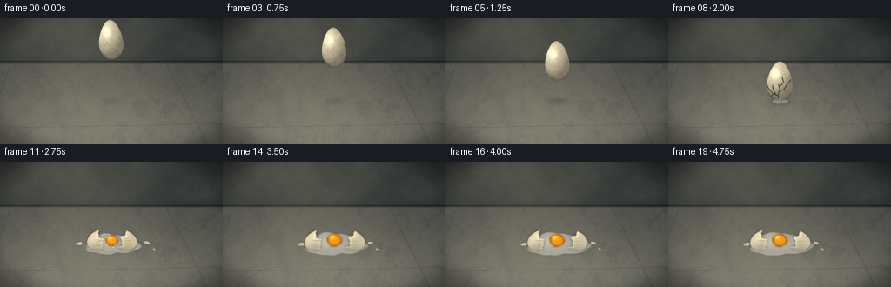
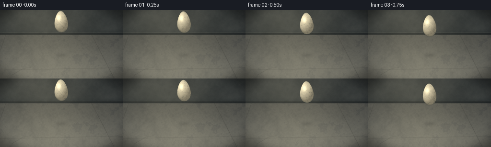

CODING AGENTS AS PIXEL WORLD MODELS
traex/DeepSeek-V4.1-Flash · material_0013
点击播放 · 原生 RGB 像素
逐轮保存的候选
回放视频、检查图与代码变化。
每份候选均可单独播放。实际图片检查记录在下方工具轨迹中。
候选 01播放与检查图
点击播放 · 原生 RGB 像素


展开代码变化
--- 上一保存版本
+++ 本次保存版本
@@ -0,0 +1,521 @@
+from pathlib import Path
+
+import numpy as np
+from PIL import Image, ImageDraw
+from scipy.ndimage import gaussian_filter
+
+import artifact_io
+
+
+WIDTH = 256
+HEIGHT = 144
+FRAME_COUNT = 20
+FPS = 4.0
+SS = 4
+W = WIDTH * SS
+H = HEIGHT * SS
+
+EGG_X = 127.5
+CONTACT_Y = 94.5
+HORIZON = 52.0
+
+
+def smoothstep(edge0, edge1, value):
+ t = np.clip((value - edge0) / (edge1 - edge0), 0.0, 1.0)
+ return t * t * (3.0 - 2.0 * t)
+
+
+def resize_noise(rng, width, height, cells_x, cells_y):
+ grid = rng.random((cells_y + 2, cells_x + 2)).astype(np.float32)
+ image = Image.fromarray(np.uint8(np.clip(grid, 0, 1) * 255), mode="L")
+ image = image.resize((width, height), Image.Resampling.BICUBIC)
+ return np.asarray(image, dtype=np.float32) / 255.0
+
+
+def fbm(rng, width, height, octaves):
+ result = np.zeros((height, width), dtype=np.float32)
+ weight = 0.0
+ for cells_x, cells_y, amplitude in octaves:
+ result += amplitude * resize_noise(rng, width, height, cells_x, cells_y)
+ weight += amplitude
+ return result / weight
+
+
+def composite(image, color, alpha):
+ alpha = np.clip(alpha, 0.0, 1.0)[..., None]
+ color = np.asarray(color, dtype=np.float32)
+ return image * (1.0 - alpha) + color * alpha
+
+
+def shadow_blob(image, cx, cy, rx, ry, strength, softness):
+ yy, xx = np.mgrid[0:H, 0:W].astype(np.float32)
+ x = (xx + 0.5) / SS
+ y = (yy + 0.5) / SS
+ mask = np.exp(-(((x - cx) / rx) ** 2 + ((y - cy) / ry) ** 2) * 2.0)
+ mask = gaussian_filter(mask, softness * SS)
+ image *= (1.0 - strength * mask)[..., None]
+ return image
+
+
+def build_background(rng):
+ yy, xx = np.mgrid[0:H, 0:W].astype(np.float32)
+ x = (xx + 0.5) / SS
+ y = (yy + 0.5) / SS
+
+ wall_noise = fbm(
+ rng,
+ W,
+ H,
+ [(7, 4, 0.42), (18, 10, 0.28), (52, 27, 0.18), (150, 82, 0.12)],
+ )
+ floor_noise = fbm(
+ rng,
+ W,
+ H,
+ [(5, 3, 0.26), (13, 7, 0.25), (31, 17, 0.20), (85, 48, 0.17), (240, 135, 0.12)],
+ )
+ floor_grain = resize_noise(rng, W, H, W // 2, H // 2)
+ floor_grain = gaussian_filter(floor_grain, 0.7 * SS)
+
+ floor_mix = smoothstep(HORIZON - 0.9, HORIZON + 1.1, y)
+ wall_light = np.exp(-(((x - 84.0) / 108.0) ** 2 + ((y - 15.0) / 70.0) ** 2))
+ wall = np.empty((H, W, 3), dtype=np.float32)
+ wall[:] = np.array([47.0, 51.0, 51.0])
+ wall += (wall_noise[..., None] - 0.48) * np.array([18.0, 17.0, 15.0])
+ wall += wall_light[..., None] * np.array([20.0, 18.0, 13.0])
+ wall -= smoothstep(38.0, 52.0, y)[..., None] * np.array([7.0, 6.0, 5.0])
+
+ floor_light = np.exp(-(((x - 112.0) / 118.0) ** 2 + ((y - 109.0) / 82.0) ** 2))
+ depth_light = 0.76 + 0.24 * smoothstep(HORIZON, HEIGHT, y)
+ floor = np.empty((H, W, 3), dtype=np.float32)
+ floor[:] = np.array([93.0, 94.0, 89.0]) * depth_light[..., None]
+ floor += (floor_noise[..., None] - 0.48) * np.array([27.0, 25.0, 20.0])
+ floor += (floor_grain[..., None] - 0.5) * 11.0
+ floor += floor_light[..., None] * np.array([25.0, 23.0, 17.0])
+ floor += smoothstep(80.0, 144.0, y)[..., None] * np.array([5.0, 4.0, 2.0])
+
+ stain = smoothstep(0.57, 0.75, floor_noise)
+ floor -= stain[..., None] * np.array([13.0, 12.0, 9.0])
+ pores = (floor_grain > 0.79).astype(np.float32)
+ pores *= 1.0 - smoothstep(0.88, 0.97, floor_grain)
+ floor -= gaussian_filter(pores, 0.45 * SS)[..., None] * np.array([13.0, 12.0, 10.0])
+
+ image = wall * (1.0 - floor_mix[..., None]) + floor * floor_mix[..., None]
+
+ # A low skirting strip and a narrow highlight establish the wall/floor junction.
+ strip = smoothstep(HORIZON - 4.3, HORIZON - 3.7, y) * (1.0 - smoothstep(HORIZON - 0.5, HORIZON + 0.3, y))
+ image *= (1.0 - strip[..., None] * 0.20)
+ rim = np.exp(-((y - (HORIZON - 4.4)) / 0.45) ** 2) * (x < 256)
+ image += rim[..., None] * np.array([12.0, 11.0, 9.0])
+
+ # Subtle perspective joints in the concrete.
+ draw = Image.fromarray(np.uint8(np.clip(image, 0, 255)), mode="RGB")
+ painter = ImageDraw.Draw(draw, "RGBA")
+ painter.line(
+ [(12 * SS, HORIZON * SS), (-20 * SS, HEIGHT * SS)],
+ fill=(33, 34, 32, 48),
+ width=max(1, SS),
+ )
+ painter.line(
+ [(191 * SS, HORIZON * SS), (238 * SS, HEIGHT * SS)],
+ fill=(36, 37, 34, 54),
+ width=max(1, SS),
+ )
+ painter.line(
+ [(0, 126 * SS), (W, 121 * SS)],
+ fill=(38, 39, 36, 42),
+ width=max(1, SS),
+ )
+ painter.line(
+ [(24 * SS, 137 * SS), (48 * SS, 123 * SS), (64 * SS, 120 * SS)],
+ fill=(38, 39, 36, 34),
+ width=max(1, SS),
+ )
+ image = np.asarray(draw, dtype=np.float32)
+
+ # Soft key light, edge falloff, and a restrained vignette.
+ key = np.exp(-(((x - 86.0) / 105.0) ** 2 + ((y - 66.0) / 88.0) ** 2))
+ image += key[..., None] * np.array([15.0, 14.0, 11.0])
+ vignette = smoothstep(0.40, 0.92, ((x - WIDTH / 2) / (WIDTH * 0.72)) ** 2 + ((y - HEIGHT / 2) / (HEIGHT * 0.78)) ** 2)
+ image *= (1.0 - 0.28 * vignette)[..., None]
+ return np.clip(image, 0, 255)
+
+
+def egg_mask(cx, cy, rx, ry, angle=0.0):
+ yy, xx = np.mgrid[0:H, 0:W].astype(np.float32)
+ x = (xx + 0.5) / SS
+ y = (yy + 0.5) / SS
+ a = np.deg2rad(angle)
+ ca, sa = np.cos(a), np.sin(a)
+ dx, dy = x - cx, y - cy
+ u = (ca * dx + sa * dy) / rx
+ v = (-sa * dx + ca * dy) / ry
+ width = 0.80 + 0.20 * np.clip(v, -1.0, 1.0)
+ radial = (u / np.maximum(width, 0.05)) ** 2 + v**2
+ mask = 1.0 - smoothstep(0.965, 1.025, radial)
+ mask *= (y <= CONTACT_Y + 0.2)
+ return mask, u, v
+
+
+def render_whole_egg(image, cx, cy, rx=17.5, ry=23.0, angle=0.0, cracked=False, frame_index=0):
+ yy, xx = np.mgrid[0:H, 0:W].astype(np.float32)
+ x = (xx + 0.5) / SS
+ y = (yy + 0.5) / SS
+ mask, u, v = egg_mask(cx, cy, rx, ry, angle)
+
+ # Contact shadow on the floor, stronger and tighter as the egg gets closer.
+ height = max(0.0, CONTACT_Y - (cy + ry))
+ proximity = 1.0 - min(1.0, height / 47.0)
+ shadow_blob(
+ image,
+ cx + 1.5,
+ CONTACT_Y + 1.1,
+ 14.0 + 5.0 * proximity,
+ 3.2 + 0.8 * proximity,
+ 0.11 + 0.22 * proximity,
+ 2.4,
+ )
+
+ # Projected shell normal, with a slightly elongated egg body.
+ q = np.clip((u / 0.91) ** 2 + (v / 0.97) ** 2, 0.0, 1.0)
+ nz = np.sqrt(np.maximum(0.0, 1.0 - q))
+ nx = u / 0.91
+ ny = v / 0.97
+ normal_len = np.sqrt(nx * nx + ny * ny + nz * nz + 1e-6)
+ nx, ny, nz = nx / normal_len, ny / normal_len, nz / normal_len
+
+ light = np.array([-0.48, -0.58, 0.66], dtype=np.float32)
+ light /= np.linalg.norm(light)
+ diffuse = np.clip(nx * light[0] + ny * light[1] + nz * light[2], 0.0, 1.0)
+ half_vec = light + np.array([0.0, 0.0, 1.0], dtype=np.float32)
+ half_vec /= np.linalg.norm(half_vec)
+ specular = np.clip(nx * half_vec[0] + ny * half_vec[1] + nz * half_vec[2], 0.0, 1.0) ** 28
+ rim = (1.0 - nz) ** 3.1
+
+ mottle = (
+ 0.55 * resize_noise(np.random.default_rng(121), W, H, 72, 40)
+ + 0.45 * resize_noise(np.random.default_rng(733), W, H, 160, 90)
+ )
+ shell = np.empty((H, W, 3), dtype=np.float32)
+ shell[:] = np.array([220.0, 207.0, 172.0])
+ shell *= (0.60 + 0.46 * diffuse)[..., None]
+ shell += (mottle[..., None] - 0.5) * np.array([20.0, 19.0, 15.0])
+ shell += specular[..., None] * np.array([52.0, 49.0, 38.0])
+ shell -= rim[..., None] * np.array([36.0, 30.0, 22.0])
+ shell += np.exp(-(((x - (cx - 6.4)) / 5.5) ** 2 + ((y - (cy - 10.2)) / 6.8) ** 2))[..., None] * np.array(
+ [31.0, 29.0, 23.0]
+ )
+
+ # Fine shell pores.
+ pore_rng = np.random.default_rng(990 + frame_index)
+ pore_noise = resize_noise(pore_rng, W, H, 230, 130)
+ pores = (pore_noise > 0.81).astype(np.float32) * mask
+ shell -= gaussian_filter(pores, 0.25 * SS)[..., None] * np.array([22.0, 18.0, 12.0])
+
+ image[:] = image * (1.0 - mask[..., None]) + shell * mask[..., None]
+
+ # Dark contour and a pale inner rim give the shell a readable silhouette.
+ edge = np.clip(gaussian_filter(mask, 0.42 * SS) - mask, 0.0, 1.0)
+ image *= (1.0 - 0.48 * edge)[..., None]
+ inner = np.clip(mask - gaussian_filter(mask, 1.2 * SS), 0.0, 1.0)
+ image += inner[..., None] * np.array([8.0, 7.0, 5.0])
+
+ if cracked:
+ crack_layer = Image.new("L", (W, H), 0)
+ crack_draw = ImageDraw.Draw(crack_layer)
+ paths = [
+ [(127.5, 94.5), (126.0, 88.0), (128.5, 82.0), (126.8, 76.0)],
+ [(126.3, 89.2), (120.5, 86.5), (115.0, 80.5), (112.5, 74.0)],
+ [(127.7, 84.0), (133.5, 81.0), (137.0, 75.0), (141.0, 70.5)],
+ [(124.0, 88.2), (121.0, 82.5), (120.0, 77.0)],
+ [(128.0, 79.0), (132.5, 73.0), (131.0, 67.5)],
+ [(121.5, 86.0), (117.0, 90.5), (113.0, 90.0)],
+ ]
+ for path in paths:
+ points = [(int(px * SS), int(py * SS)) for px, py in path]
+ crack_draw.line(points, fill=255, width=max(2, int(1.15 * SS)), joint="curve")
+ cracks = np.asarray(crack_layer, dtype=np.float32) / 255.0
+ cracks = gaussian_filter(cracks, 0.28 * SS) * mask
+ image *= (1.0 - 0.74 * cracks)[..., None]
+ cracks_light = np.roll(cracks, SS // 2, axis=1) * 0.23
+ image += cracks_light[..., None] * np.array([93.0, 82.0, 65.0])
+
+
+def puddle_mask(frame_index, scale):
+ yy, xx = np.mgrid[0:H, 0:W].astype(np.float32)
+ x = (xx + 0.5) / SS
+ y = (yy + 0.5) / SS
+ cx = 128.3
+ cy = 95.2
+ rx = 30.0 * scale
+ ry = 11.2 * scale
+ u = (x - cx) / rx
+ v = (y - cy) / ry
+ rho = np.sqrt(u * u + v * v)
+ theta = np.arctan2(v, u)
+ settle = np.exp(-max(0, frame_index - 11) * 0.18)
+ ripple = (0.035 * settle) * np.sin(9.0 * theta + frame_index * 0.45)
+ edge = (
+ 1.0
+ + 0.09 * np.sin(3.0 * theta + 0.7)
+ + 0.045 * np.sin(7.0 * theta + 1.9)
+ + 0.020 * np.sin(13.0 * theta + 0.3)
+ + 0.07 * np.exp(-((theta - 0.35) / 0.28) ** 2)
+ + ripple
+ )
+ alpha = np.clip((edge - rho) / 0.045, 0.0, 1.0)
+ return alpha, edge, rho, theta, cx, cy, rx, ry
+
+
+def render_puddle(image, frame_index, scale):
+ alpha, edge, rho, theta, cx, cy, rx, ry = puddle_mask(frame_index, scale)
+ alpha = gaussian_filter(alpha, 0.35 * SS)
+ contact = gaussian_filter(alpha, 2.2 * SS)
+ image *= (1.0 - 0.17 * contact)[..., None]
+
+ yy, xx = np.mgrid[0:H, 0:W].astype(np.float32)
+ x = (xx + 0.5) / SS
+ y = (yy + 0.5) / SS
+ white = np.empty((H, W, 3), dtype=np.float32)
+ white[:] = np.array([230.0, 224.0, 207.0])
+ white -= smoothstep(0.2, 0.96, rho)[..., None] * np.array([20.0, 18.0, 13.0])
+ white += np.exp(-(((x - (cx - 9.0)) / (rx * 0.55)) ** 2 + ((y - (cy - 4.2)) / (ry * 0.75)) ** 2))[..., None] * np.array(
+ [18.0, 17.0, 14.0]
+ )
+ image[:] = image * (1.0 - 0.58 * alpha[..., None]) + white * (0.58 * alpha[..., None])
+
+ rim = np.clip(1.0 - np.abs(rho - edge) / 0.075, 0.0, 1.0) * (rho < edge + 0.07)
+ rim = gaussian_filter(rim, 0.28 * SS)
+ image[:] = image * (1.0 - 0.33 * rim[..., None]) + np.array([250.0, 246.0, 232.0]) * (0.33 * rim[..., None])
+ sheen = np.exp(-(((x - (cx - 10.0)) / (rx * 0.52)) ** 2 + ((y - (cy - 4.8)) / (ry * 0.52)) ** 2))
+ image += (sheen * alpha * 17.0)[..., None] * np.array([1.0, 0.97, 0.88])
+
+
+def render_yolk(image, frame_index):
+ yy, xx = np.mgrid[0:H, 0:W].astype(np.float32)
+ x = (xx + 0.5) / SS
+ y = (yy + 0.5) / SS
+ t = max(0, frame_index - 9)
+ cx = 128.3 + 0.8 * np.sin(t * 0.5) * np.exp(-t * 0.22)
+ cy = 90.3 + 0.55 * np.sin(t * 0.9 + 0.6) * np.exp(-t * 0.18)
+ rx = 6.0 + 2.8 * smoothstep(0, 4, t)
+ ry = 5.0 + 2.5 * smoothstep(0, 4, t)
+ theta = np.arctan2((y - cy) / ry, (x - cx) / rx)
+ rho = np.sqrt(((x - cx) / rx) ** 2 + ((y - cy) / ry) ** 2)
+ edge = 1.0 + 0.045 * np.sin(4.0 * theta + 0.8) + 0.025 * np.sin(9.0 * theta + 1.7)
+ mask = np.clip((edge - rho) / 0.055, 0.0, 1.0)
+ mask = gaussian_filter(mask, 0.3 * SS)
+
+ shadow = gaussian_filter(mask, 1.5 * SS)
+ image *= (1.0 - 0.23 * shadow)[..., None]
+
+ light = np.exp(-(((x - (cx - 2.4)) / 4.6) ** 2 + ((y - (cy - 3.4)) / 4.0) ** 2))
+ rim = smoothstep(0.55, 1.0, rho)
+ yolk = np.empty((H, W, 3), dtype=np.float32)
+ yolk[:] = np.array([237.0, 151.0, 25.0])
+ yolk -= rim[..., None] * np.array([55.0, 57.0, 15.0])
+ yolk += light[..., None] * np.array([18.0, 28.0, 14.0])
+ image[:] = image * (1.0 - mask[..., None]) + yolk * mask[..., None]
+
+ spec = np.exp(-(((x - (cx - 3.1)) / 2.4) ** 2 + ((y - (cy - 3.7)) / 1.8) ** 2))
+ image += (spec * mask * 0.78)[..., None] * np.array([70.0, 67.0, 44.0])
+ edge_dark = np.clip(gaussian_filter(mask, 0.55 * SS) - mask, 0.0, 1.0)
+ image -= (edge_dark * 0.35)[..., None] * np.array([65.0, 37.0, 6.0])
+
+
+def shell_piece(image, cx, cy, rx, ry, angle, side, phase):
+ yy, xx = np.mgrid[0:H, 0:W].astype(np.float32)
+ x = (xx + 0.5) / SS
+ y = (yy + 0.5) / SS
+ a = np.deg2rad(angle)
+ ca, sa = np.cos(a), np.sin(a)
+ dx, dy = x - cx, y - cy
+ u = (ca * dx + sa * dy) / rx
+ v = (-sa * dx + ca * dy) / ry
+ ellipse = smoothstep(1.03, 0.97, u * u + v * v)
+ cut = 0.08 + 0.13 * np.sin(5.0 * v + phase) + 0.055 * np.sin(11.0 * v + phase * 1.7)
+ if side < 0:
+ piece = ellipse * smoothstep(-0.01, 0.035, cut - u)
+ broken_band = np.exp(-((u - cut) / 0.20) ** 2)
+ else:
+ piece = ellipse * smoothstep(-0.01, 0.035, u + cut)
+ broken_band = np.exp(-((u + cut) / 0.20) ** 2)
+ piece = gaussian_filter(piece, 0.28 * SS)
+
+ shadow = gaussian_filter(piece, 1.8 * SS)
+ image *= (1.0 - 0.28 * shadow)[..., None]
+
+ light = np.exp(-(((u + 0.38) / 0.60) ** 2 + ((v + 0.50) / 0.70) ** 2))
+ shell = np.empty((H, W, 3), dtype=np.float32)
+ shell[:] = np.array([205.0, 193.0, 161.0])
+ shell -= smoothstep(-0.3, 1.0, v)[..., None] * np.array([34.0, 31.0, 24.0])
+ shell += light[..., None] * np.array([28.0, 26.0, 20.0])
+ shell += broken_band[..., None] * np.array([27.0, 29.0, 25.0])
+ shell = np.clip(shell, 0, 255)
+ image[:] = image * (1.0 - piece[..., None]) + shell * piece[..., None]
+
+ edge = np.clip(gaussian_filter(piece, 0.55 * SS) - piece, 0.0, 1.0)
+ image *= (1.0 - 0.55 * edge)[..., None]
+
+ # A fine fracture line on each shell half.
+ crack = np.exp(-((v - 0.20 * np.sin(4.0 * u + phase)) / 0.025) ** 2) * piece
+ crack *= smoothstep(-0.55, -0.2, u) * smoothstep(0.65, 0.3, u)
+ image *= (1.0 - 0.22 * crack)[..., None]
+
+
+def draw_shard(image, cx, cy, rx, ry, angle, flip):
+ yy, xx = np.mgrid[0:H, 0:W].astype(np.float32)
+ x = (xx + 0.5) / SS
+ y = (yy + 0.5) / SS
+ a = np.deg2rad(angle)
+ ca, sa = np.cos(a), np.sin(a)
+ dx, dy = x - cx, y - cy
+ u = (ca * dx + sa * dy) / rx
+ v = (-sa * dx + ca * dy) / ry
+ if flip:
+ edge = 0.5 - 0.8 * u
+ else:
+ edge = 0.5 + 0.8 * u
+ mask = smoothstep(1.02, 0.97, u * u + v * v) * smoothstep(-0.03, 0.04, edge - v)
+ mask = gaussian_filter(mask, 0.2 * SS)
+ color = np.array([214.0, 201.0, 171.0]) - smoothstep(-1.0, 1.0, v)[..., None] * np.array([28.0, 25.0, 20.0])
+ image[:] = image * (1.0 - mask[..., None]) + color * mask[..., None]
+ edge_dark = np.clip(gaussian_filter(mask, 0.5 * SS) - mask, 0.0, 1.0)
+ image *= (1.0 - 0.48 * edge_dark)[..., None]
+
+
+def add_particles(image, frame_index):
+ if frame_index < 8 or frame_index > 13:
+ return
+ rng = np.random.default_rng(4421)
+ yy, xx = np.mgrid[0:H, 0:W].astype(np.float32)
+ x = (xx + 0.5) / SS
+ y = (yy + 0.5) / SS
+ t = max(0.0, (frame_index - 8) / FPS)
+ fade = max(0.0, 1.0 - max(0, frame_index - 9) / 5.0)
+
+ for index in range(34):
+ angle = rng.uniform(-2.75, -0.35)
+ speed = rng.uniform(24.0, 76.0)
+ px = 128.0 + np.cos(angle) * speed * t * rng.uniform(0.55, 1.0)
+ py = 93.5 + np.sin(angle) * speed * t * 0.30 + 23.0 * t * t
+ if py > 104.0:
+ continue
+ size = rng.uniform(0.38, 1.15) * fade
+ if size <= 0:
+ continue
+ spot = np.exp(-(((x - px) / size) ** 2 + ((y - py) / size) ** 2) * 1.7)
+ dust = rng.random() < 0.72
+ if dust:
+ image[:] = image * (1.0 - 0.26 * spot[..., None]) + np.array([137.0, 133.0, 122.0]) * (0.26 * spot[..., None])
+ else:
+ image += spot[..., None] * np.array([42.0, 38.0, 28.0])
+
+ if frame_index == 8:
+ dust_cloud = np.exp(-(((x - 128.0) / 31.0) ** 2 + ((y - 94.0) / 4.3) ** 2))
+ dust_cloud = gaussian_filter(dust_cloud, 2.2 * SS)
+ image[:] = image * (1.0 - 0.13 * dust_cloud[..., None]) + np.array([152.0, 148.0, 136.0]) * (
+ 0.13 * dust_cloud[..., None]
+ )
+
+
+def add_droplets(image, frame_index):
+ if frame_index < 9 or frame_index > 12:
+ return
+ yy, xx = np.mgrid[0:H, 0:W].astype(np.float32)
+ x = (xx + 0.5) / SS
+ y = (yy + 0.5) / SS
+ t = (frame_index - 8) / FPS
+ fade = 1.0 - max(0, frame_index - 10) * 0.22
+ rng = np.random.default_rng(8188)
+ for index in range(26):
+ angle = rng.uniform(0, 2 * np.pi)
+ speed = rng.uniform(12.0, 42.0)
+ px = 128.0 + np.cos(angle) * speed * t
+ py = 95.0 + np.sin(angle) * speed * t * 0.36
+ rx = rng.uniform(0.55, 1.55) * fade
+ ry = rx * rng.uniform(0.38, 0.72)
+ if rx < 0.2:
+ continue
+ drop = np.exp(-((((x - px) / rx) ** 2 + ((y - py) / ry) ** 2) * 1.8))
+ if rng.random() < 0.18:
+ color = np.array([232.0, 154.0, 32.0])
+ else:
+ color = np.array([245.0, 241.0, 227.0])
+ image[:] = image * (1.0 - 0.72 * drop[..., None]) + color * (0.72 * drop[..., None])
+
+
+def render_frame(frame_index, background):
+ image = background.copy()
+
+ if frame_index <= 8:
+ if frame_index <= 7:
+ p = (frame_index / 7.0) ** 2
+ cy = 24.5 + 47.5 * p
+ cx = EGG_X + 1.5 * p
+ angle = -3.5 + 3.0 * p
+ render_whole_egg(image, cx, cy, rx=17.2, ry=22.8, angle=angle, frame_index=frame_index)
+ else:
+ # The shell has reached the floor and is visibly compressed at contact.
+ render_puddle(image, frame_index, 0.28)
+ render_whole_egg(
+ image,
+ 128.2,
+ 72.1,
+ rx=18.0,
+ ry=22.5,
+ angle=0.7,
+ cracked=True,
+ frame_index=frame_index,
+ )
+ add_particles(image, frame_index)
+ else:
+ t = frame_index - 9
+ scales = [0.63, 0.84, 0.98, 1.045, 1.075, 1.090, 1.098, 1.102, 1.104, 1.105, 1.105]
+ puddle_scale = scales[min(t, len(scales) - 1)]
+ render_puddle(image, frame_index, puddle_scale)
+
+ spread = 6.0 + 12.0 * smoothstep(0, 4, t)
+ drop = 2.0 * (1.0 - np.exp(-t * 0.65))
+ left_angle = -18.0 - 5.0 * smoothstep(0, 3, t)
+ right_angle = 17.0 + 4.0 * smoothstep(0, 3, t)
+ shell_piece(image, 127.5 - spread, 87.8 + drop, 16.0, 10.7, left_angle, -1, 0.6)
+ shell_piece(image, 129.5 + spread, 88.1 + drop * 0.85, 16.5, 10.8, right_angle, 1, 2.1)
+
+ if t >= 1:
+ shard_alpha = smoothstep(1, 3, t)
+ draw_shard(image, 92.0 - 2.0 * shard_alpha, 94.0 + 1.5 * shard_alpha, 3.8, 2.2, -21.0, False)
+ draw_shard(image, 168.0 + 2.0 * shard_alpha, 92.8 + 1.2 * shard_alpha, 3.3, 1.9, 19.0, True)
+ if t >= 2:
+ draw_shard(image, 177.0, 101.0, 2.1, 1.25, 34.0, False)
+
+ render_yolk(image, frame_index)
+ add_particles(image, frame_index)
+ add_droplets(image, frame_index)
+
+ # Small lens vignette, grain, and final high-quality downsample.
+ yy, xx = np.mgrid[0:H, 0:W].astype(np.float32)
+ x = (xx + 0.5) / SS
+ y = (yy + 0.5) / SS
+ vignette = smoothstep(
+ 0.52,
+ 1.15,
+ ((x - WIDTH / 2) / (WIDTH * 0.67)) ** 2 + ((y - HEIGHT / 2) / (HEIGHT * 0.70)) ** 2,
+ )
+ image *= (1.0 - 0.16 * vignette)[..., None]
+ rng = np.random.default_rng(6100 + frame_index)
+ grain = rng.normal(0.0, 1.35, size=(H, W, 1)).astype(np.float32)
+ image = np.clip(image + grain, 0, 255)
+ image = image.reshape(HEIGHT, SS, WIDTH, SS, 3).mean(axis=(1, 3))
+ return np.uint8(np.clip(image + 0.5, 0, 255))
+
+
+def main():
+ rng = np.random.default_rng(20261111)
+ background = build_background(rng)
+ frames = [render_frame(index, background) for index in range(FRAME_COUNT)]
+ artifact_io.save(frames, Path(__file__).resolve().parent)
+
+
+if __name__ == "__main__":
+ main()
可观测工具轨迹
实际执行的命令与返回图片。
命令 1exit 0
/bin/bash -c "pwd && rg --files -g 'prompt.txt' -g 'GENERATION_RULES.md' -g 'task_spec.json' -g '"'!node_modules'"' -g '"'!venv'"'"
命令 2exit 0
/bin/bash -c 'ls -la'
命令 3exit 0
/bin/bash -c 'find . -maxdepth 2 -type f | sort | head -200'
命令 4exit 0
/bin/bash -c 'cat prompt.txt'
命令 5exit 0
/bin/bash -c 'cat GENERATION_RULES.md'
命令 6exit 0
/bin/bash -c 'cat task_spec.json'
命令 7exit 0
/bin/bash -c "sed -n '1,240p' artifact_io.py"
命令 8exit 0
/bin/bash -c "sed -n '1,260p' player_template.html"
命令 9exit 0
/bin/bash -c "python - <<'PY' import importlib.util for m in ['numpy','PIL','scipy','cv2','imageio','matplotlib']: print(m, bool(importlib.util.find_spec(m))) PY"
命令 10exit 0
/bin/bash -c 'python generate.py'
命令 11exit 0
/bin/bash -c 'ls -lh inspection.png transition_check.png index.html pixels.npz frames/00.png frames/19.png'
命令 12exit 0
/bin/bash -c "python - <<'PY'
from PIL import Image
for name in ['inspection.png','transition_check.png']:
im=Image.open(name)
im.resize((im.width*2, im.height*2), Image.Resampling.NEAREST).save('.tmp/'+name.replace('.png','_2x.png'))
print(name, im.size)
PY"命令 13exit 0
/bin/bash -c 'command -v chafa || true; command -v viu || true; command -v jp2 || true; command -v img2txt || true'
命令 14exit 0
/bin/bash -c "python - <<'PY'
from PIL import Image
import numpy as np
for n in range(20):
a=np.asarray(Image.open(f'frames/{n:02d}.png')).astype(float)
print(n, 'mean', a.mean((0,1)).round(1), 'std',a.std().round(1), 'p1',np.percentile(a,1).round(0),'p99',np.percentile(a,99).round(0))
PY"命令 15exit 0
/bin/bash -c "python - <<'PY'
from PIL import Image
import numpy as np
chars=' .:-=+*#%@'
for n in [0,3,5,7,8,9,11,15,19]:
a=np.asarray(Image.open(f'frames/{n:02d}.png').convert('L'))
a=np.asarray(Image.fromarray(a).resize((64,36), Image.Resampling.BILINEAR))
# boost contrast around scene range
a=np.clip((a-35)/(190-35),0,1)
print(f'\\nFRAME {n:02d}')
for row in a:
print(''.join(chars[min(9,int(v*10))] for v in row))
PY"命令 16exit 0
/bin/bash -c "python - <<'PY'
from PIL import Image
import numpy as np
for n in [0,7,8,9,19]:
a=np.asarray(Image.open(f'frames/{n:02d}.png'))
print('\\nframe',n)
for y in [0,10,25,40,52,60,80,90,94,100,120,143]:
print(y, 'left',a[y,0].tolist(),'mid',a[y,128].tolist(),'right',a[y,255].tolist())
print('bright top-right', a[0:10,245:256].max(), a[0:10,245:256].mean((0,1)).round(1))
PY"命令 17exit 0
/bin/bash -c "python - <<'PY'
from PIL import Image
import numpy as np
for n in range(20):
a=np.asarray(Image.open(f'frames/{n:02d}.png')).astype(float)
# egg/bright shell pixels: bright and low saturation-ish; yolk orange
bright=(a.mean(2)>160)&(a.mean(2)-a[:,:,2]>20)
orange=(a[:,:,0]>170)&(a[:,:,0]-a[:,:,2]>80)&(a[:,:,1]>80)
for name,m in [('shell',bright),('yolk',orange)]:
ys,xs=np.where(m)
if len(xs): print(f'{n:02d} {name:5s} n={len(xs):4d} box=({xs.min()},{ys.min()})-({xs.max()},{ys.max()}) ctr=({xs.mean():.1f},{ys.mean():.1f})')
else: print(f'{n:02d} {name:5s} n=0')
print()
PY"命令 18exit 0
/bin/bash -c "python - <<'PY'
from PIL import Image
import numpy as np
for n in [8,9,10,11,19]:
a=np.asarray(Image.open(f'frames/{n:02d}.png').convert('L'))
a=np.asarray(Image.fromarray(a).resize((96,54), Image.Resampling.NEAREST))
chars=' .:-=+*#%@'
print('\\nFRAME',n)
for row in a:
print(''.join(chars[min(9,int(v/256*10))] for v in row))
PY"命令 19exit 0
/bin/bash -c "python - <<'PY'
from PIL import Image
import numpy as np
# inspect dominant colors for each frame, quantized to 16 levels
for n in [0,7,8,9,19]:
a=np.asarray(Image.open(f'frames/{n:02d}.png'))
q=(a//16).reshape(-1,3)
u,c=np.unique(q,axis=0,return_counts=True)
idx=np.argsort(c)[-12:][::-1]
print('\\n',n)
for i in idx: print(tuple((u[i]*16).tolist()), c[i])
PY"命令 20exit 0
/bin/bash -c "python - <<'PY'
from PIL import Image
import numpy as np
for n in range(20):
a=np.asarray(Image.open(f'frames/{n:02d}.png')).astype(float)
# print central vertical line color at selected y
ys=[10,20,30,40,50,60,70,80,90,100]
print(n, ['%3d,%3d,%3d'%tuple(a[y,128].astype(int)) for y in ys])
PY"命令 21exit 0
/bin/bash -c "python - <<'PY'
from PIL import Image
import numpy as np
# summarize whether each frame has plausible white/yellow regions and their bounds
for n in range(20):
a=np.asarray(Image.open(f'frames/{n:02d}.png')).astype(np.float32)
r,g,b=a[:,:,0],a[:,:,1],a[:,:,2]
white=(r>180)&(g>170)&(b>130)&(r-b>15)
yellow=(r>190)&(g>100)&(r-g>55)&(g-b>30)
print(n,'white',int(white.sum()),'yellow',int(yellow.sum()))
PY"命令 22exit 0
/bin/bash -c "python - <<'PY'
from PIL import Image
import numpy as np
for n in [0,4,7,8,9,12,19]:
a=np.asarray(Image.open(f'frames/{n:02d}.png')).astype(float)
# print 5x5 box means around object center positions
print('\\nframe',n)
for y in [5,15,25,35,45,55,65,75,85,90,95,100,110]:
vals=[]
for x in [110,120,128,136,146]:
v=a[max(0,y-1):y+2,max(0,x-1):x+2].mean((0,1))
vals.append('%d/%d/%d'%tuple(v.round().astype(int)))
print('%3d'%y,' '.join(vals))
PY"命令 23exit 0
/bin/bash -c "python - <<'PY'
from PIL import Image
import numpy as np
chars=' .:-=+*#%@'
for n,box in [(0,(100,0,155,55)),(7,(100,45,155,100)),(8,(100,45,155,100)),(9,(80,70,180,110)),(19,(75,70,185,110))]:
a=np.asarray(Image.open(f'frames/{n:02d}.png').convert('L').crop(box))
# no resize for native pixel details, trim to 55 cols
a=a[:min(a.shape[0],40),:min(a.shape[1],70)]
print(f'\\nFRAME {n} crop {box}')
for row in a:
print(''.join(chars[min(9,int(v/256*10))] for v in row))
PY"命令 24exit 0
/bin/bash -c 'python -m py_compile generate.py'
命令 25exit 0
/bin/bash -c "du -sh . && find . -maxdepth 2 -type f -printf '%p %s bytes\\n' | sort"
命令 26exit 0
/bin/bash -c "python - <<'PY'
from pathlib import Path
from PIL import Image
import numpy as np
frames=sorted(Path('frames').glob('*.png'))
assert len(frames)==20
arr=[]
for p in frames:
im=Image.open(p)
assert im.size==(256,144) and im.mode=='RGB'
arr.append(np.asarray(im))
a=np.stack(arr)
assert a.shape==(20,144,256,3) and a.dtype==np.uint8
# Ensure real motion, a dark environment, and visible shell/yolk colors.
diffs=np.abs(a[1:].astype(np.int16)-a[:-1].astype(np.int16)).mean((1,2,3))
white=((a[:,:,:,0]>180)&(a[:,:,:,1]>170)&(a[:,:,:,2]>130)).sum((1,2))
yellow=((a[:,:,:,0]>190)&(a[:,:,:,1]>100)&(a[:,:,:,0]-a[:,:,:,2]>80)).sum((1,2))
print('frames',len(a),'shape',a.shape)
print('mean frame delta',round(float(diffs.mean()),3),'max',round(float(diffs.max()),3))
print('fall deltas',np.round(diffs[:8],2).tolist())
print('impact deltas',np.round(diffs[8:13],2).tolist())
print('bright shell px range',int(white.min()),int(white.max()))
print('yolk px final',int(yellow[-1]))
assert diffs[:8].mean()>0.2 and white.max()>300 and yellow[-1]>80
print('validation: OK')
PY"命令 27exit 0
/bin/bash -c 'git status --short 2>/dev/null || true'
保存候选 1 份；完成命令 27 次；可验证图片返回 0 张。原始 API 响应与完整日志保留在本地。